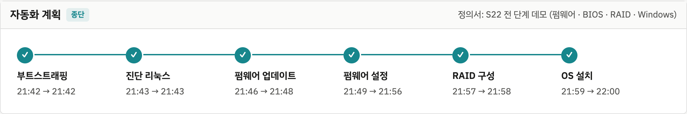

처음 프로비저닝하기
새 서버 한 대에 펌웨어 업데이트와 Windows Server 설치를 진행하는 과정을 처음부터 끝까지 따라갑니다. 각 단계의 자세한 설명은 단계마다 연결된 페이지에 있습니다.
전체 순서
프로비저닝은 다음 순서로 진행됩니다. 앞의 두 단계는 운영자가 화면에서 미리 준비하는 작업입니다. 서버의 전원을 켠 뒤로는 PXE 서버가 서버와 통신하며 진행하고, 운영자는 정의서를 할당하고 개시하는 일만 합니다.
- 자원 등록: 메인보드 모델, 펌웨어, OS 버전과 ISO
- 세팅 정의서 작성: 서버에 진행할 단계를 정합니다.
- 서버 전원 켜기: 서버가 PXE 부팅으로 자동 등록되고 하드웨어 정보가 수집됩니다.
- 정의서 할당과 개시: 등록된 서버에 정의서를 할당하고 프로비저닝을 시작합니다.
- 진행 확인: 단계별 진행 상황을 지켜보고 완료를 확인합니다.
시작하기 전에
다음 항목은 PXE 서버 관리자가 설치할 때 준비합니다. 준비되지 않았다면 이 페이지의 절차를 진행할 수 없으므로 먼저 관리자에게 확인합니다.
- 서버가 PXE 부팅할 수 있는 네트워크와 proxy DHCP 설정(proxy DHCP)
- 진단 리눅스 부팅 자산과 TFTP 부팅 인프라 자산(시스템 자산)
- Windows 설치 소스. OS 설치 단계에 필요하며 상태는 시스템 자산 화면에서 확인
- 로그인할 계정(계정과 로그인)
프로비저닝할 서버의 조건
프로비저닝할 서버는 다음 조건을 모두 갖춰야 합니다.
- 디스크에 아무것도 설치되지 않은 상태
ipmitool등으로 메인보드 제조사명, 시리얼 번호, SMBIOS UUID 를 변경하지 않은 상태- Gigabyte 메인보드
디스크가 비어 있어야 하는 것은 원활한 네트워크 부팅 진입을 위해서입니다. PXE 서버는 SMBIOS UUID 로 서버를 구별하고, 메인보드 제조사명과 모델명으로 등록된 메인보드 모델을 찾습니다. 펌웨어를 기록하기 전에는 BMC 로 보드 시리얼 번호를 읽어 진단 때 수집한 값과 같은 서버인지 확인합니다. 이 값들이 바뀌어 있으면 서버가 등록되지 않거나 다른 서버로 인식되고, 펌웨어 업데이트가 진행되지 않습니다.
메인보드 등록 화면에서는 Asus 와 Fujitsu 도 고를 수 있지만, 프로비저닝은 Gigabyte 메인보드에서만 진행할 수 있습니다.
1. 자원 등록
메인보드 모델
프로비저닝할 서버의 메인보드 모델을 먼저 등록합니다. 서버가 PXE 부팅할 때 보고하는 보드 모델과 일치하는 모델이 없으면 서버가 등록되지 않습니다. 이때 관리 화면에는 아무 표시도 나타나지 않고, 서버 콘솔에만 [provision] server error. retrying... 메시지가 반복됩니다.
- 자원 관리메인보드 에서 + 신규 메인보드 모델 등록 을 누릅니다.
- 제조사를 고르고 모델명을 입력한 뒤 등록 을 누릅니다.
모델명을 입력하는 규칙은 메인보드의 모델명 비교 규칙에서 설명합니다.
BIOS 펌웨어와 BMC 펌웨어
펌웨어 업데이트 단계에서 사용할 펌웨어를 등록합니다. 펌웨어는 메인보드 모델에 속하므로 방금 등록한 메인보드 모델의 상세 열에서 BIOS 등록, BMC 등록 을 눌러 시작하면 모델을 다시 고르지 않아도 됩니다. 이름, 버전, 펌웨어 파일 경로를 입력하고 등록합니다. 자세한 내용은 BIOS 펌웨어와 BMC 펌웨어에서 설명합니다.
펌웨어를 등록하지 않아도 펌웨어 업데이트 단계가 들어간 정의서는 저장됩니다. 대신 실행할 때 사용할 펌웨어가 없으면 그 업데이트를 건너뜁니다. 업데이트가 필요하다면 정의서를 할당하기 전에 펌웨어가 등록돼 있는지 확인합니다.
OS 버전과 ISO
OS 설치 단계에서 고를 OS 버전을 등록하고, 그 OS 버전에 ISO 를 하나 이상 추가합니다. 정의서 작성 화면은 사용할 수 있는 ISO 가 있는 OS 버전만 선택지로 보여 줍니다.
- 자원 관리OS 버전 에서 + 신규 OS 버전 등록 을 누릅니다.
- OS 이름에서 Windows Server 를 고르고 OS 버전을 입력한 뒤 등록 을 누릅니다.
- 목록에서 등록한 OS 버전을 고르고 상세 열의 ISO 추가 를 누릅니다.
- ISO 경로를 입력하거나 파일을 업로드하고 등록 을 누릅니다. 파일을 업로드하는 동안에는 화면을 떠나지 않습니다. 업로드가 끝나면 화면이 목록으로 돌아가고, 해시 계산은 배경 작업으로 이어집니다.
해시 계산이 끝나 ISO 가 사용 가능한 상태가 되어야 정의서 작성 화면에서 그 OS 버전을 고를 수 있습니다. 큰 ISO 는 몇 분이 걸릴 수 있으며, 진행 상황과 완료는 사이드바 아래쪽의 배경 작업 버튼에서 확인합니다.
현재 설치할 수 있는 OS 는 Windows Server 뿐입니다. Rocky Linux, CentOS, Ubuntu 도 OS 버전과 ISO 로 등록할 수 있지만 정의서의 OS 설치 단계에서는 고를 수 없습니다.
2. 세팅 정의서 작성
세팅 정의서는 서버에 진행할 단계와 각 단계의 설정을 묶은 문서입니다. 여기서는 펌웨어 업데이트와 OS 설치 두 단계를 넣습니다.
- 프로비저닝세팅 정의서 에서 새 정의서 작성 을 누릅니다.
- 정의서 명칭을 입력합니다. 삭제되지 않은 다른 정의서와 이름이 겹치면 안 됩니다.
- 단계 추가에서 + 펌웨어 업데이트 를 누릅니다. 메인보드 모델은 자동 감지로 둡니다. 자동 감지는 실행할 때 서버의 보드 모델을 감지하고, 그 보드에 등록된 BIOS 펌웨어와 BMC 펌웨어 중 순위가 가장 높은 활성 펌웨어로 업데이트합니다. 순위는 펌웨어 화면에서 정합니다.
- + OS 설치 를 누르고 설치할 OS, 설치 ISO, 설치 이미지 (에디션)를 차례로 고릅니다. Administrator 비밀번호를 입력합니다. 이 비밀번호는 Windows 의 비밀번호 정책을 만족해야 설치가 끝납니다.
- 정의서 생성 을 누릅니다. 저장되면 정의서 상세 화면이 열립니다.
새로 만든 정의서는 활성 상태이므로 바로 서버에 할당할 수 있습니다. 단계는 추가한 순서와 상관없이 펌웨어 업데이트, BIOS 설정, RAID 구성, OS 설치 순서로 진행됩니다. 단계 종류마다의 설정 항목은 단계 종류별 설정에서 설명합니다.
3. 서버 전원 켜기
프로비저닝할 서버를 PXE 부팅 네트워크에 연결하고 전원을 켭니다. 서버가 PXE 부팅하면 PXE 서버에 자동으로 등록됩니다. 운영자가 화면에서 서버를 등록하는 절차는 없습니다.
등록되면 진단 리눅스가 부팅되어 보드 시리얼, BIOS 버전, BMC 정보, CPU, 메모리, 디스크, PCIe 장치를 수집합니다. 이 하드웨어 수집도 운영자의 조작 없이 진행됩니다.
- 프로비저닝서버 를 엽니다. 화면은 새로 고치지 않아도 자동으로 갱신됩니다.
- 수집이 끝나기 전의 서버는 등록 진행 중 카드 안에 있습니다. 카드 안의 수집 중 머리는 접혀 있으므로 눌러서 펼칩니다. 등록된 서버는 곧바로 수집 중에 들어가며, 수집이 끝날 때까지 기다리면 됩니다. 수집 중에 오래 머물고 서버 콘솔이 진단 리눅스로 넘어가지 않는다면 부팅과 네트워크를 점검합니다.
- 수집이 끝나면 서버가 하드웨어 사양별 묶음으로 옮겨집니다. 서버 이름을 눌러 상세 화면을 엽니다. 이름을 정하지 않은 서버는 (이름 미지정)으로 보입니다.
수집을 마친 서버는 정의서가 할당되고 개시될 때까지 그 상태로 기다립니다. 서버 이름이나 사내 시리얼 번호는 상세 화면의 관리 탭에서 입력할 수 있지만 프로비저닝에 꼭 필요하지는 않습니다.
4. 정의서 할당과 개시
정의서 할당
- 서버 상세 화면의 개요 탭에서 정의서 할당 을 누릅니다. 세팅 정의서 할당 창이 열립니다.
- 표에서 앞에서 만든 정의서를 고릅니다. 표 아래에 정의서 내용이 펼쳐집니다. 정의서가 많으면 검색칸에 이름을 입력하고 Enter 를 눌러 찾습니다.
- 이 서버에 할당 을 누릅니다.
표에는 활성 상태의 정의서만 나타나고, 상태 열에 가능, 대조 전, 사용 중단, 잠김 중 하나가 표시됩니다. 메인보드나 RAID 카드가 이 서버와 맞지 않는 정의서는 잠김으로 표시되고, 고르면 할당할 수 없는 이유가 나타납니다. 특정 메인보드나 RAID 카드를 지정한 정의서는 하드웨어 수집이 끝나기 전에는 대조 전으로 표시됩니다. 이 예처럼 메인보드를 자동 감지로 두고 RAID 구성 단계가 없는 정의서는 대조할 것이 없어 가능으로 표시됩니다. 어느 경우든 수집이 끝난 뒤 할당하는 것이 안전합니다. 할당할 수 없는 경우와 그 이유는 정의서 할당에서 설명합니다.
프로비저닝 개시
할당이 끝나면 개요 탭의 프로비저닝 개시 버튼이 눌리는 상태가 됩니다. 버튼을 누르면 수집 이후의 단계가 시작됩니다. 정의서를 할당하기 전에는 이 버튼이 회색으로 막혀 있습니다.
개시한 뒤에는 다른 정의서로 재할당할 수 없습니다. 정의서를 바꿔야 한다면 개시하기 전에 다른 정의서로 재할당 으로 바꿉니다.
5. 진행 확인
서버 상세 화면은 진행에 따라 자동으로 갱신됩니다. 개요 탭의 자동화 계획에서 단계별 진행을 한눈에 볼 수 있습니다. 앞의 부트스트래핑과 진단 리눅스는 모든 서버가 거치는 단계이고, 그 뒤로 정의서에 넣은 단계가 이어집니다.

단계 안에서 무엇을 하고 있는지는 프로비저닝 탭의 단계별 패널에서 확인합니다. 펌웨어를 기록하는 동안에는 서버가 PXE 서버와 통신하지 않는 시간이 있습니다. 이때 연결 표시가 "집행 중" 으로 바뀌며 정상입니다. 펌웨어를 기록하는 동안에는 전원 제어, 회수, 실패 전환이 잠깁니다. 펌웨어 기록이 끝날 때까지 서버의 전원을 끄지 않습니다.
모든 단계가 끝나면 운영 상태가 완료 로 바뀝니다. 개요 탭의 현재 단계에는 종단 배지와 "모든 단계를 마쳤습니다" 가 표시됩니다. 종단은 진행할 단계가 더 없다는 뜻입니다.
단계가 실패했다면
운영 상태가 실패 로 바뀌고 프로비저닝 탭 이름 옆에 빨간 점이 표시됩니다. 개요 탭의 실패한 단계 보기 로 실패 사유를 확인한 뒤 원인을 해결하고 재시도 를 누르면 실패한 단계부터 다시 진행합니다. 펌웨어 업데이트 단계가 아닌 단계의 재시도는 서버의 전원을 조작하지 않으므로 서버가 다시 PXE 부팅해야 진행이 이어집니다. 펌웨어 업데이트 단계의 재시도는 전원을 껐다 켠 뒤 PXE 로 다시 부팅합니다. BMC 정보가 수집된 서버에는 재시도 후 전원 켜기 버튼도 있어, 재시도와 함께 BMC 로 전원을 켜거나 재시작합니다. 펌웨어 기록 중에 실패한 경우에는 장비가 부팅하지 못하는 상태가 될 수 있어 버튼이 재시도 (차단됨) 으로 바뀌고 눌리지 않습니다. 단계별 조치 방법은 실패 확인과 조치에서 설명합니다.
다음 단계
- 정의서에 BIOS 설정과 RAID 구성 단계 추가: 단계 종류별 설정, BIOS 세팅 템플릿
- 여러 대를 묶어 정의서를 일괄 할당: 서버 그룹